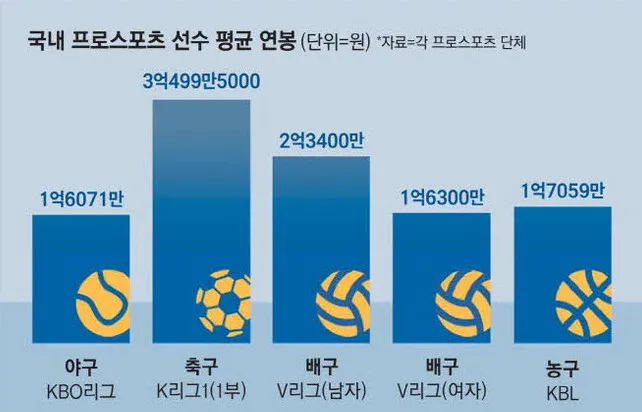

2025년 국내 프로스포츠 리그 평균 연봉
댓글
와 매출만 보면 야구가 축구 3배는 더 벌텐데 ㅋㅋㅋ 연봉은 더 낮네 ㅋㅋㅋㅋㅋ
야구는 뭐 신고선수나 신인들 최저까지 다 합친 평균인가? 이게 조금 궁금하네
근데 축구는 시발ㅋㅋ 세금보조받는놈들이 저렇게 세금낭비하는게 맞나 싶음ㅋㅋ
진짜 세금다쳐내고 방만경영 싹다칼질해야함
(축구팬임)
야구 1군 상위 29명 기준 상위권 팀은 3억 정도고 하위권 팀인 1억 좀 넘는 정도래
하위권팀은 키움인가.......설마
세금 비율 공개해라 ㅋㅋㅋ
단순 연봉수치만 놓고 볼게 아니라
야구는 관중도 많고 경기수도 뒤지게 많음
거기다가 경기시간까지 길어서
그 구장 주변 경제 활성화 시키는거까지
생각하면 개씹효자라니까 ㅋㅋ
프로축구 - 지자체 예산 없으면 운영 안 됨ㅋㅋㅋㅋㅋㅋㅋㅋㅋ
그들만의 세금 잔치 리그
얼탱
전용구장에서 해야된다고 떼쓴덕에 전국에 전용구장이 무려 10개나 있고 연봉도 존나 많음
이 모든게 나라 세금으로 기생해서 흡혈한 부귀영화임
축구는 과하네